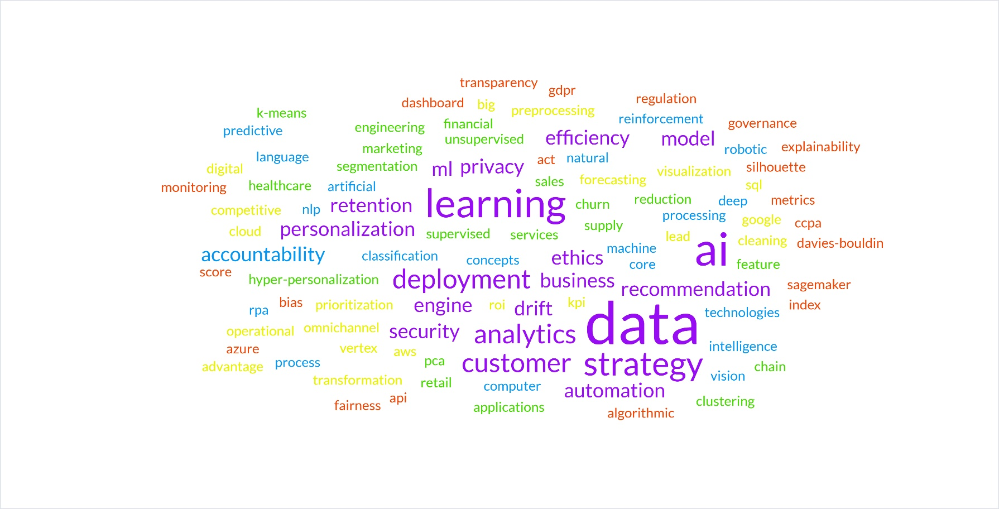
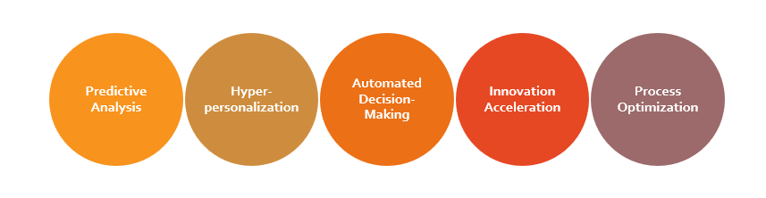
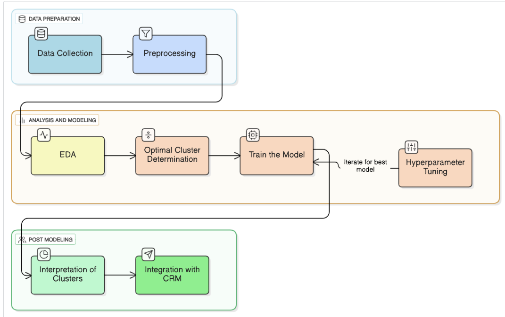
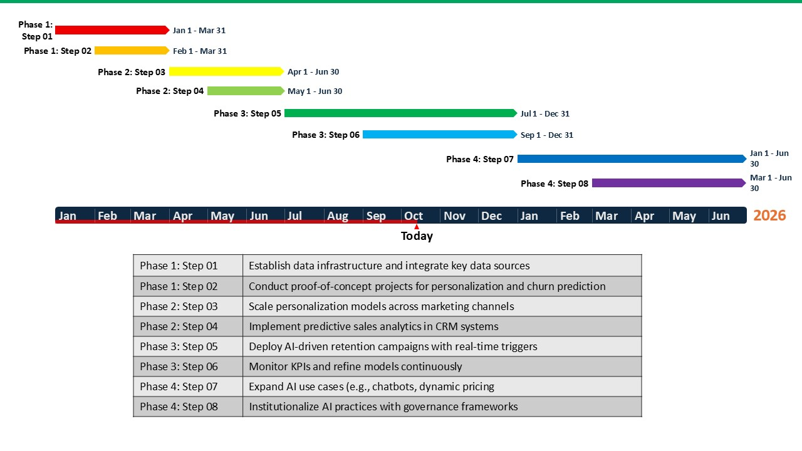

💼 Project Showcase
📘 Task 01 – Fundamental AI Concepts and Their Strategic Importance
This task introduced the foundational principles of AI and explored how organizations leverage AI for competitive advantage. It covered the role of AI in business transformation, decision-making, and ethical responsibility.
- Key Learnings: Strategic importance of AI, business value creation, ethical frameworks.
- 📄 View PDF Report
- 🖼️ Images:


🛍️ Task 02 – Application of AI Techniques and Tools in Customer Segmentation
This project implemented K-Means clustering to segment retail customers based on purchasing behavior. It demonstrated how data preprocessing, feature engineering, and clustering evaluation can guide targeted marketing.
- Key Learnings: Machine learning workflow, clustering validation, data-driven marketing.
- 📄 View PDF Report
- 🖼️ Images:

🎬 Task 03 – AI-Driven Business Strategy and Netflix Case Study Analysis
Analyzed Netflix’s use of AI for personalization, content prediction, and engagement optimization. The study showcased how recommendation systems, user insights, and A/B testing fuel Netflix’s success.
- Key Learnings: Recommendation algorithms, user retention, data ethics in media streaming.
- 📄 View PDF Report
- 🖼️ Images:


💻 Task 04 – AI Solution Deployment and Professional Portfolio
Designed an AI deployment strategy and created this portfolio website as a showcase of academic and practical achievements. It reflects an understanding of solution deployment, portfolio design, and self-branding.
- Key Learnings: End-to-end model lifecycle, deployment, and professional presentation.
- 📄 View PDF Report
- 🖼️ Images: